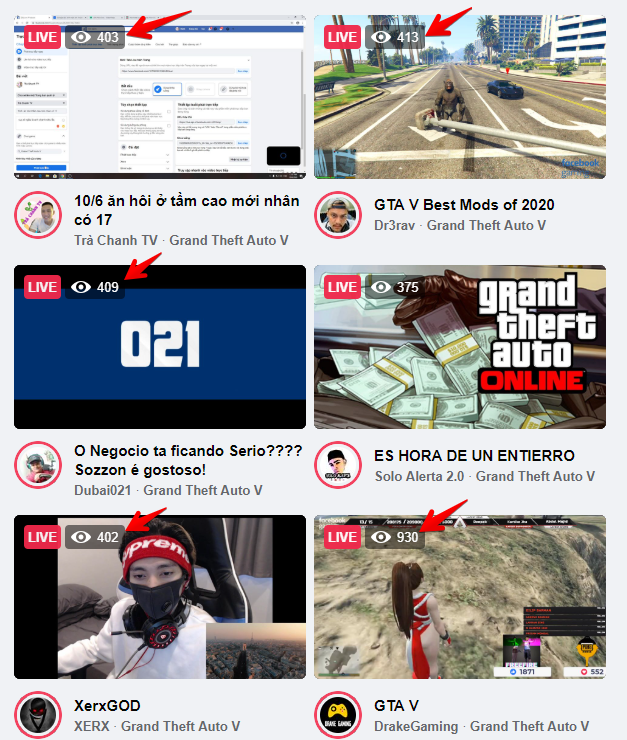

| Steps to reproduce | 1. Open https://www.facebook.com/ 2. Open any Facebook group page, where you have admin/editor rights 3. Tap on input field "Write a post..." 4. Type any text 5. Press button "Post" |
| RESULT | Inscription "Uploading" with loading tab and post don't appear after it (need to reload page to see post) |
| EXPECTED RESULT | Post appears in group feed after pressing "Post" button. |
| Author | Vladyslav Pokydko |
| Priority | High |
| Attachment: |
| Steps to reproduce | 1. Open Facebook Creator studio https://business.facebook.com/ 2. Choose any Page to View, where you have admin/editor rights and press "View" button 3. Press button "Create Post" 4. Select "Create Post" option in drop-down list 5. Type any text in field "What's on your mind?" 6. Press option-button "Share now" 7. Choose "Schedule" in drop-down list 8. Change (or not) schedule time and press button "Schedule" 9. Press button "Schedule Post" 10. Close notification "Successfully scheduled post on Group_Name" 11. Select tab "Scheduled" |
| RESULT | Inscription "No results to show" |
| EXPECTED RESULT | Should be post preview. |
| Author | Vladyslav Pokydko |
| Priority | High |
| Attachment: |
| Steps to reproduce | 1. Open https://www.facebook.com/ 2. Press "See more..." in Explore section (left side) 3. Choose "Gaming Video" 4. Press "Browse Games" 5. Click on any game (for example Grand Theft Auto V) 6. Press "See all" in "Live Now" section |
| RESULT | After Step 5 – wrong ranking by viewers in "Live Now" section (see attachments). After Step 6 – wrong ranking by viewers in "See all"> |
| EXPECTED RESULT | Streams with more viewers should be ranked higher, than ones with less |
| Author | Vladyslav Pokydko |
| Priority | High |
| Attachments: |  |
| Steps to reproduce | 1. Launch Call of Duty: Modern Warfare 2. Launch Warzone mode 3. Start any game with another player who will help to test this bug 4. Player takes rifle (M4A1 with additional modules: long barrel and muffler). 5. Player stays facing the wall in market location. |
| RESULT | Other players can see barrel and muffler through the wall being outside of the market. |
| EXPECTED RESULT | Other players shouldn't see the gun through the wall in FPS with tactic elements. |
| Author | Vladyslav Pokydko |
| Priority | High |
| Attachment: |
| Steps to reproduce | 1. Launch Call of Duty: Modern Warfare 2. Launch "Сетевая игра" 3. Start any multiplayer game with teammates. 4. Press and hold "Tab" button in game, mouse right click to enable options opportunity. 5. Right click on teammate and choose option "Вкл. приглушение" in drop-down list – teammate is muted 6. Right click on muted teammate. |
| RESULT | Drop-down list with option "Вкл. приглушение" |
| EXPECTED RESULT | Drop-down list with option "Откл. приглушение" |
| Author | Vladyslav Pokydko |
| Priority | High |
| Attachment: |
| Steps to reproduce | 1. Laucnh mobile app Rozetka (build 4.5.0) 2. Tap "Каталог" button on main screen 3. Choose category "Ноутбуки и компьютеры" (or any other) 4. Choose subcategory "Ноутбуки" |
| RESULT | Error message "Ошибка сервера. Ошибка при передаче данных с сервера" |
| EXPECTED RESULT | List of products in selected subcategory |
| Author | Vladyslav Pokydko |
| Priority | Highest |
| Attachment: |
| Steps to reproduce | 1. Laucnh mobile app OLX.ua (build 5.7.7) 2. Tap "Профиль" 3. Tap "Настройки" 4. Tap "Темная тема" 5. Choose "Авто" |
| RESULT | Dark mode didn't turn on at the night |
| EXPECTED RESULT | Dark mode is ON in the evening/night time |
| Author | Vladyslav Pokydko |
| Priority | Middle |
| Attachment: |
| Steps to reproduce | 1. Open desktop application Telegram 2. Choose any chat and type message "Hello" 3. Launch mobile app Telegram - there is Draft message in recent chat – open it and block your phone 4. In Desktop version in recent chat type message "Hello! How are you?" 5. In mobile app from word "Hello" delete one last letter. |
| RESULT | Losing typed info in desktop app |
| EXPECTED RESULT | Text/data should be synchronized in desktop and mobile app |
| Author | Vladyslav Pokydko |
| Priority | Middle |
| Attachment: |
| Steps to reproduce | 1. Open https://www.ukr.net/ |
| RESULT | Loading time: 5.70 s |
| EXPECTED RESULT | Loading time less than 3 s |
| Author | Vladyslav Pokydko |
| Priority | High |
| Attachment: |
| Steps to reproduce | 1. Open https://www.ukr.net/ |
| RESULT | POST https://accounts.ukr.net/api/v1/token/verification/acquire 599 Ajax.js:150 |
| EXPECTED RESULT | No 599 Error |
| Author | Vladyslav Pokydko |
| Priority | High |
| Attachment: |